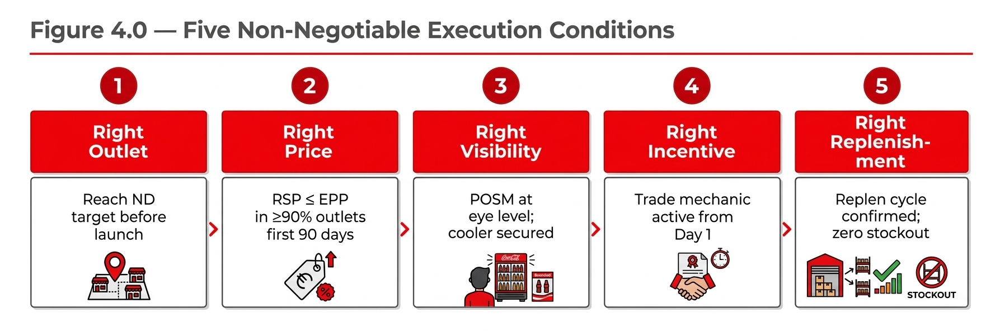

Chapter 06
Chapter 4 Commercialization Blueprint
Pack approval is the beginning of the commercial challenge, not the end of it. The majority of recruitment pack failures in the Coca-Cola system have not been strategy failures — they have been commercialization failures: correct pack, wrong execution. The five most common commercialization failure modes are: inadequate pre-launch channel readiness; sell-in without effective sell-out mechanics; missing or wrong POSM at point of purchase; price at outlet level deviating from the designed EPP; and replenishment gaps that create stockouts in the first 30–60 days when trial velocity is highest.

Playbook Chapter
Chapter 4 Commercialization Blueprint
4.1 From Pack Decision to Market
Pack approval is the beginning of the commercial challenge, not the end of it. The majority of recruitment pack failures in the Coca-Cola system have not been strategy failures — they have been commercialization failures: correct pack, wrong execution. The five most common commercialization failure modes are: inadequate pre-launch channel readiness; sell-in without effective sell-out mechanics; missing or wrong POSM at point of purchase; price at outlet level deviating from the designed EPP; and replenishment gaps that create stockouts in the first 30–60 days when trial velocity is highest.
This chapter provides the full commercialization blueprint: pre-launch readiness, launch design, sell-in to sell-out mechanics, the five non-negotiable execution conditions, and a structured 90-day timeline.
The Spain affordability case (RGMX @ Scale, 2025) illustrates the commercialization imperative: the plan was aligned in October and launched January 2nd — a 10-week execution window — and succeeded because the system treated it as the #1 cross-functional priority, involving Legal, Finance, Marketing, Supply Chain, and the bottler from Day 1. Speed, system alignment, and "progress over perfection" were cited as the three critical success factors.
4.2 Pre-Launch Readiness Checklist
Category | Readiness Item | Owner | Status |
|---|---|---|---|
Strategy | Pack role and EPP confirmed; business case approved at required level | RGM Lead | ☐ |
Strategy | OBPPC updated to reflect new pack; pack role brief issued to all commercial functions | RGM Lead | ☐ |
Supply Chain | Production capability confirmed; initial stock build completed | Supply Chain Lead | ☐ |
Supply Chain | Case configuration and logistics unit confirmed with distributor(s) | Supply Chain / Sales Ops | ☐ |
Supply Chain | First 90-day demand plan confirmed and locked in S&OP | Supply Chain / Finance | ☐ |
Pricing | RSP confirmed and published by channel; EPP compliance mechanism in place | Commercial / RGM | ☐ |
Pricing | Customer pricing and margin confirmed; trade investment letters/agreements issued | Commercial / Finance | ☐ |
Execution | POSM brief issued; POSM in production; delivery timeline confirmed | Marketing / Trade Marketing | ☐ |
Execution | Target outlet list by channel finalized; numeric distribution targets set | Sales Lead | ☐ |
Execution | Distributor briefing completed; sales toolkit deployed | Sales Lead / Distributor Mgmt | ☐ |
Execution | Retail incentive program designed and briefed | Trade Marketing | ☐ |
RTM | RTM routing confirmed for target outlets; cold delivery capability assessed where required | RTM / Sales Operations | ☐ |
Measurement | KPI dashboard set up; baseline data confirmed; tracking cadence agreed | RGM / Finance | ☐ |
Measurement | Cannibalization monitoring plan active; threshold set and shared with leadership | RGM Lead | ☐ |
Governance | Launch steering committee formed; escalation path confirmed; 30-day review scheduled | RGM Lead / Commercial Director | ☐ |
4.3 Five Non-Negotiable Execution Conditions
These five conditions are mandatory for any recruitment pack launch, in any market, in any channel. They are not aspirational standards — they are minimum conditions without which the pack cannot function as intended. A launch missing any one of these five conditions should be delayed until the condition is met.
Non-Negotiable | Minimum Standard | Most Common Failure Mode | Corrective Action if Missed |
|---|---|---|---|
Right Outlet | Numeric distribution target in priority channel achieved before launch day. Minimum 60% of target outlets reached in Week 1. | Launching across all channels simultaneously without adequate coverage in any single channel — creating diffuse, low-impact presence. | Focus distribution drive; delay ATL/BTL communication until 60% ND threshold met. |
Right Price | RSP at target EPP in 90%+ of audited outlets in pilot. Price compliance monitoring from Week 2. | Outlets charging premium above EPP (especially in traditional trade where pricing is less controlled). Recruitment pack becomes invisible at the planned price point. | Price communication at outlet level; distributor briefing on RSP enforcement; trade survey in first 30 days. |
Right Visibility | Dedicated POSM placed in all priority outlets. Cooler facings secured where cold consumption is required. No buried or back-of-shelf placement. | POSM printed but not placed; or placed in wrong location (e.g., general merchandise area rather than NARTD zone). | Merchandiser compliance audit in first 14 days; POSM replacement where missing. |
Right Incentive | Trade incentive or promotional mechanic active from launch day — either push incentive (distributor / outlet) or pull mechanic (consumer promotion). | Incentive designed but not activated at launch; retroactively added after poor initial offtake — too late to build early trial velocity. | Confirm incentive payment mechanics are operational before launch day. Trade survey confirms outlet awareness of incentive. |
Right Replenishment | Replenishment frequency confirmed pre-launch. First 60 days: maximum 3-day stockout tolerance. Zero stockout in CVS/MT. | Strong trial in Week 1–2 creates unexpected sell-through; replenishment cycle not adjusted; stockouts in Week 3–4 destroy trial momentum. | Early-read inventory monitoring from Day 7; automatic replenishment trigger if outlet-level stock falls below 5 days of sales. |
4.4 Sell-In to Sell-Out Closed Loop

4.5 First 90-Day Launch Timeline
[ASCII GANTT — First 90 Days]
Week | Activity | Owner | KPI / Milestone |
|---|---|---|---|
W–4 to W–1 (Pre-launch) | Distributor briefing; sales toolkit deployment; POSM production confirmation; trade incentive activation setup | Sales Lead / Trade Marketing | All distributors briefed; sales force trained; POSM in warehouse |
W1–W2 (Launch) | Distribution drive to priority outlets; POSM placement; pricing confirmation audit; launch incentive activation | Sales Operations / Merchandising | ≥60% numeric distribution in priority channel; EPP compliance confirmed in ≥80% of audited outlets |
W2–W4 (Early Read) | Daily sell-out tracking in pilot outlets; cannibalization first read; distributor inventory review; POSM compliance audit | RGM / Sales Analytics | Trial rate vs. target; cannibalization within threshold; stockout rate <5% |
W4–W8 (Stabilization) | Replenishment cycle optimization; outlet Tier 2 expansion begins; trade incentive effectiveness review; consumer trial to repeat rate assessment | Sales Lead / RGM | Repeat purchase rate ≥20% of trial buyers; ND Tier 1 ≥80% |
W8–W12 (30/60/90 Review) | Full 90-day KPI review; cannibalization final assessment; Scale / Fix / Exit recommendation; national rollout planning if threshold met | RGM Lead / Commercial Director / Finance | Volume vs. plan ≥80%; cannibalization ≤ threshold; NPV on track; Scale/Fix/Exit decision confirmed and communicated |
4.6 Distributor Briefing and Sell-In Story Structure
Section | Content |
|---|---|
1. Why now | Market context: consumer affordability gap, competitive white space, category growth opportunity. One page, data-driven. |
2. The pack and its role | Pack name, EPP, channel role, and how it complements the existing portfolio (not replaces it). Addresses distributor concern about cannibalization of existing SKUs. |
3. What's in it for the distributor | Incremental volume projection, distributor margin per case, any distribution incentive program, sell-in targets by outlet tier. |
4. Execution standards | POSM requirements, placement standards, cold vs. ambient by channel, RSP at outlet level. Distributor is accountable for RSP compliance in their territory. |
5. Measurement and reporting | How performance will be tracked, when the first review will happen, and what triggers bonus payout if an incentive scheme applies. |
6. What happens next | Timeline to first delivery, reorder process, escalation contact for supply or pricing issues. No ambiguity on process. |
4.7 Key Assumptions and Risk Flags
Key Assumption: The commercialization blueprint assumes a conventional bottler-distributor-outlet RTM model. In markets where direct-to-retail (DTR) or e-commerce channels represent a significant share of the target consumer's purchase occasion, additional channel-specific execution plans are required. The blueprint should be adapted accordingly by the market RGM Lead.
[FLAG: additional input required — Cambodia 580ml Coca-Cola launch (October 2025): The launch plan confirms KHR 1,500 RSP at MT and KHR 1,500 at key GT outlets, with a confirmed POSM program and sales motivation mechanics. However, numeric distribution target for GT was not confirmed in source documentation reviewed. Market RGM team to confirm ND target for GT before declaring full launch readiness.]